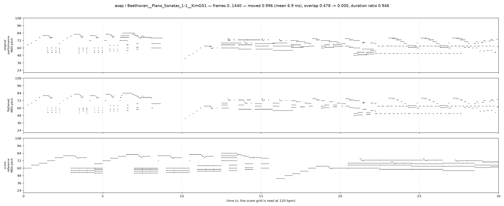
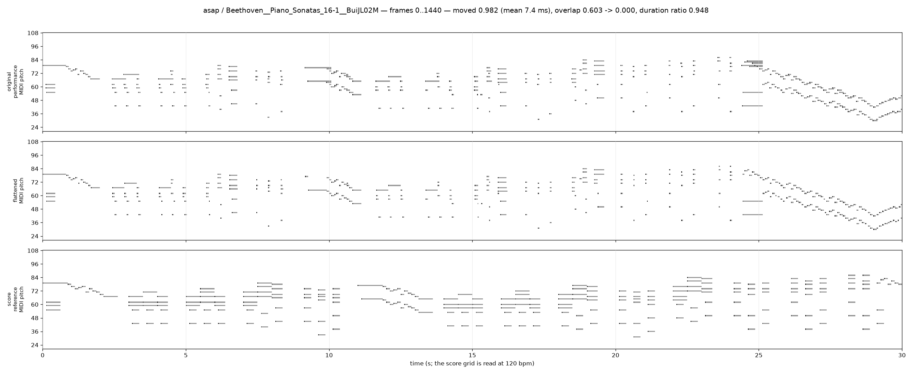
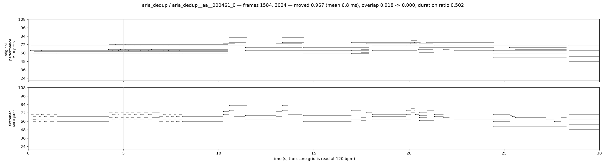
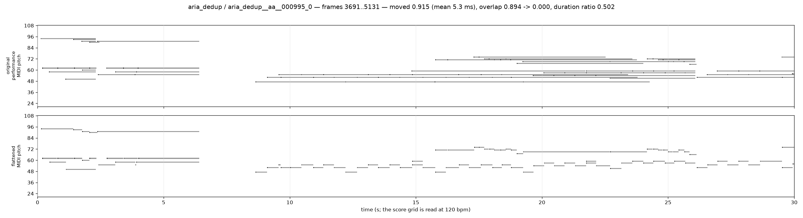
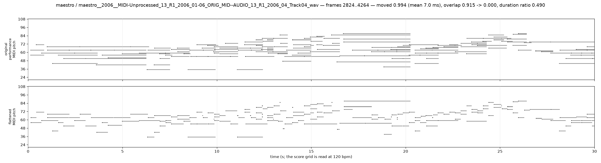
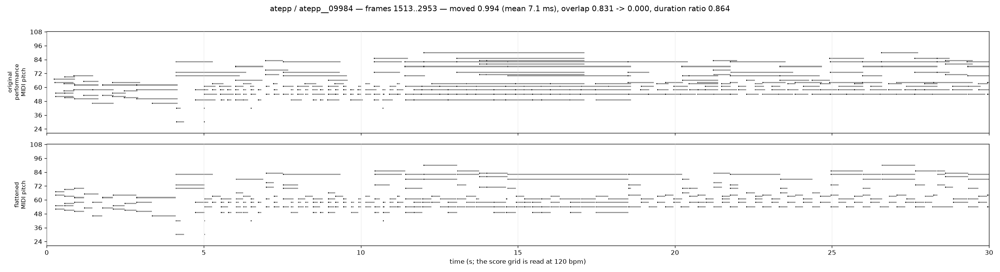

Needs internet: the MIDI players and the soundfont are loaded from a CDN. Serve this directory over HTTP (the players cannot fetch .mid over file://).
A performance and its flattened twin are the J5c self-derived positive pair for the content half: the same notes, with the parts a notation program would not write down removed. Four rules, all deterministic. (1) Onsets within 30 ms chain into one chord group, but a group never spans more than 50 ms. (2) Every note of a group moves to the group's rounded median frame, so it lands on a frame the way a score render does (consecutive groups are kept two frames apart). (3) Every note takes the segment's median velocity, which removes the dynamics and the chord-role spread. (4) A note is cut at the next onset of its own voice (same hand, within an octave), which undoes pedal and legato overlap, and then by the usual caps: never past the next onset of the same pitch, never past the end, never shorter than one frame. What is left alone is rubato: flattening the tempo would need beat tracking and an alignment map, so the twin keeps the performance's timing curve -- that is the residual domain cue. The voice-successor rule is a heuristic, so a notated long note held under a moving same-hand line gets cut short; this shows up as a low median duration ratio on pedal-heavy pieces.
One 1440-frame segment (30 s at 48 fps) per piece; the two Beethoven pairs start at frame 0 of both the performance and the DCML score render, the four val performances at 25% of the piece. The segment is cropped before flattening.
on-frame 0.004 → 1 velocities 62 → 1 moved 0.996 (mean 6.9 ms, max 34.5 ms) overlap 0.478 → 0.000 duration ratio 0.946 (cut 0.268) notes 272

on-frame 0.018 → 1 velocities 83 → 1 moved 0.982 (mean 7.4 ms, max 31.5 ms) overlap 0.603 → 0.000 duration ratio 0.948 (cut 0.239) notes 330

on-frame 0.033 → 1 velocities 12 → 1 moved 0.967 (mean 6.8 ms, max 29.2 ms) overlap 0.918 → 0.000 duration ratio 0.502 (cut 0.902) notes 122

on-frame 0.085 → 1 velocities 13 → 1 moved 0.915 (mean 5.3 ms, max 20.0 ms) overlap 0.894 → 0.000 duration ratio 0.502 (cut 0.904) notes 94

on-frame 0.006 → 1 velocities 51 → 1 moved 0.994 (mean 7.0 ms, max 31.3 ms) overlap 0.915 → 0.000 duration ratio 0.490 (cut 0.875) notes 176

on-frame 0.006 → 1 velocities 64 → 1 moved 0.994 (mean 7.1 ms, max 31.0 ms) overlap 0.831 → 0.000 duration ratio 0.864 (cut 0.715) notes 319
